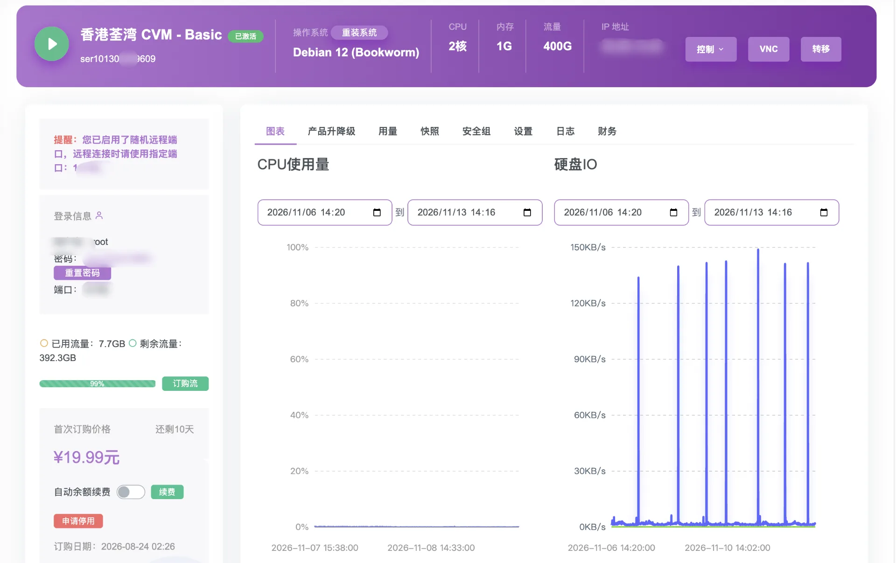
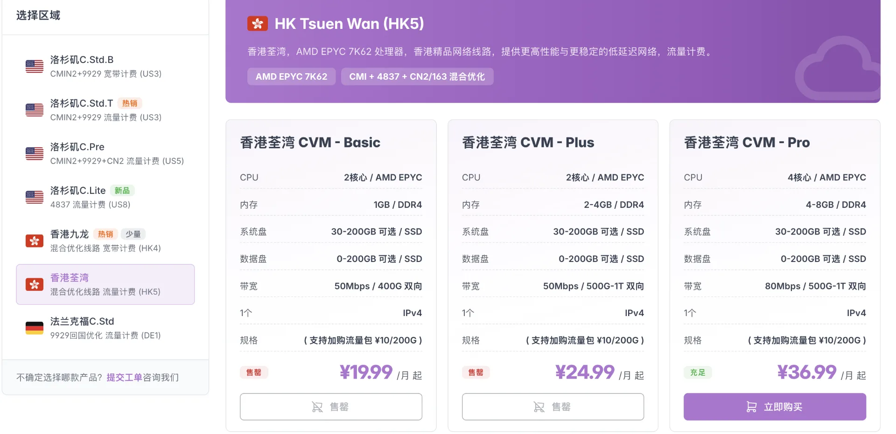

云悠（YUNYOO）香港荃湾 HK5 CVM 实测：¥19.99/月 AMD EPYC 7K62、1.4ms 极致延迟与 10Mbps 降速异常深度复盘
深度实测云悠（YUNYOO）香港荃湾 HK5 节点特惠云服务器（CVM - Basic）：月付仅需 ¥19.99。实测展示 AMD EPYC 7K62 处理器算力底子、345 MB/s 固态硬盘 I/O、广东沿海低至 1.4ms 的物理极速延迟；客观复盘 2026 年 11 月 13 日实测中网络带宽由标称 50Mbps 骤降至 10Mbps 的性能异常，并针对官方工单响应迟缓、长期缺货断仓等核心槽点给出客观选型建议。
重要声明与实机测试提示：
1. 本文所有硬件跑分、I/O 存储读写与国内外 Speedtest 测速数据，均来源于作者自费长期持有的真实生产实例（实例 ID：ser101302509609，公网 IP：64.90.15.65，开通于 2026 年 8 月）；
2. 产品直达选购入口：👉 云悠香港荃湾 HK5 CVM 官方购买通道（https://vps-craft.com/go/yunyoo-cvm-hk5-basic）；
3. ⚠️ 供货状态警示：截至测试当天，该系列入门款（Basic ¥19.99/月）与进阶款（Plus ¥24.99/月）官方控制台均显示处于“售罄（Out of Stock）”状态，属于典型的低价秒空型机型；
4. ⚠️ 售后服务与运维红线提示：
* 工单回复极慢：云悠属于典型的低成本特惠型主机商，售后工单响应普遍非常缓慢（经常需要等待较长时间甚至数天），缺乏大厂的保姆级实时技术支持；
* 只适合“老手盲操”：该机器仅适合具备独立排障能力的资深玩家与开发者，切勿将无备份的重大企业核心生产业务部署于此！
在亚太地区的海外云服务器选型中，“中国香港机房” 始终是国内站长和网络极客的兵家必争之地。香港不仅具备免备案的灵活性，更拥有与广东沿海低至个位数毫秒（1~5ms）、与全国大部 30~50ms 的极致物理延迟优势。
然而，市面上带有直连优化线路的香港 VPS 往往价格居高不下，稍微带点带宽和流量，月付动辄四五十甚至上百元。
国内特惠主机商云悠（YUNYOO） 推出的 “香港荃湾 HK Tsuen Wan (HK5) 系列”，打出了 “AMD EPYC 7K62 高性能处理器 + 30GB SSD + CMI/4837/CN2/163 混合优化 + 月付 ¥19.99 起” 的超低门槛，一经上线便引起抢购，常年处于缺货状态。
那么，这款只要 19 块多的小鸡真实性能到底怎样？宣称的 50Mbps 带宽能否跑满？延迟是否真如宣称的那样丝滑？
本文基于作者自费长测的真实数据，为您带来全方位、客观的实测复盘。
一、实例概览与硬件实测：AMD EPYC 7K62、DDR4 与存储 I/O
本次实测的实例为 2026 年 8 月下单持有的 香港荃湾 CVM - Basic（首购价格 ¥19.99/月）。

在 Debian 12 系统下通过终端运行 Superbench.sh (v2.3.0) 实机检测，底层硬件回显如下：
----------------------------------------------------------------------
Superbench.sh -- Modernized Edition v2.3.0
Thanks : Special thanks to Oldking (oldking.net) & Teddysun (teddysun.com)
Mode : Standard WorkDir : /tmp/superbench.BTs8Oz
----------------------------------------------------------------------
CPU Model : AMD EPYC 7K62 48-Core Processor
CPU Cores : 2 Cores (2595 MHz, x86_64)
CPU Cache : 512 KB
OS : Debian GNU/Linux 12 (bookworm) (64 Bit) kvm
Kernel : 6.1.0-53-cloud-amd64
Total Space : 3.2 GB / 29.4 GB (~30GB SSD 磁盘)
Total RAM : 263 MB / 973 MB (分配 627 MB 缓冲) (~1GB 物理内存)
Total SWAP : 0 MB / 2048 MB (系统已预置 2GB Swap)
Uptime : 27 days 10 hour 51 min (连续在线超 27 天)
Load Average : 0.00, 0.00, 0.00
TCP CC : bbr
IPv4 ASN & ISP : AS979 NetLab Global (香港本地 BGP 交换)
IPv4 Location : Hong Kong, Hong Kong / HK
IPv6 Status : Offline
----------------------------------------------------------------------
I/O Test Directory : /root
I/O Speed( 1.0GB ) : 208 MB/s
I/O Speed( 1.0GB ) : 356 MB/s
I/O Speed( 1.0GB ) : 472 MB/s
---------------------------------------------------------------------
Average I/O Speed : 345.3 MB/s
----------------------------------------------------------------------1. 处理器与算力底色（AMD EPYC 7K62）
- CPU 架构：机房母鸡采用的是 AMD 伺服器级 48 核心 96 线程的 EPYC 7K62 处理器，主频锁定在约 2.60GHz；
- 核心分配：入门款直接给足了 2 核心。在 19.99 元的价位下，很多商家往往只给 1 核，2 核心的算力底盘在应对多任务后台（如 Nginx、轻量 Redis、个人博客）时更具从容度；
- 内存与 Swap：标配 1GB DDR4 物理内存，官方镜像出厂已贴心地挂载了 2048MB（2GB）Swap 虚拟内存。这意味着哪怕遇到临时的内存高负载，也不会轻易触发 Linux OOM Killer 杀进程。
2. 存储 I/O 读写表现
- 官方标称配置为 30GB SSD 存储；
- 实测三轮顺序写入速度分别为 208 MB/s、356 MB/s、472 MB/s，平均 I/O 速度达到 345.3 MB/s；
- 性能定性：属于标准的企业级 SATA SSD / 混合固态阵列水准，对于日常建站、软件包安装与轻量数据库读写而言，完全不会出现卡顿或拖后腿的现象。
二、网络实测深度复盘：1.4ms 极致物理延迟 VS 10Mbps 降速疑云
网络表现是本次实测中最具戏剧性、也最需要客观还原的部分。
测试时间取自：北京时间 2026 年 11 月 13 日 14:52（日间公网常规时段），Superbench 节点速率与延迟数据如下：
------------------------- 节点测速与延迟实测表现 -------------------------
测速节点名称 上传速率 (Upload) 下载速率 (Download) 延迟 (Latency)
------------------- -------------------- --------------------- --------------
Speedtest Default 7.90 Mbit/s 9.90 Mbit/s 6.18 ms
Fast.com (Netflix) N/A (DL Only) 9.88 Mbit/s 1.33 ms
Cloudflare CDN 本地 2.62 Mbit/s 3.97 Mbit/s 1.21 ms
中国西安 (联通) 6.29 Mbit/s 5.85 Mbit/s 37.43 ms
中国上海 (电信) 6.37 Mbit/s 10.87 Mbit/s 31.62 ms
中国广州 (广电/移动) N/A (DL Only) 4.37 Mbit/s 1.40 ms <-- ★ 极致延迟
-------------------------------------------------------------------------
官方测速验证: https://www.speedtest.net/result/c/71eff2ae-41f5-4e59-9628-3effaf8782481. 亮点：无可挑剔的“内网级”物理延迟
- 广东广州：延迟低至惊人的 1.40 ms！这几乎与国内同城局域网无异；
- 上海电信：延迟仅 31.62 ms；
- 陕西西安联通：延迟仅 37.43 ms；
- 香港本地直连 Cloudflare CDN 边缘节点更是只要 1.21 ms。
- 延迟评价：从路由延迟来看，官方标称的“荃湾精品直连混合优化”在物理线路上表现极佳，没有恶性绕路日本或新加坡的现象，对华南和华东沿海极其友好。
2. 疑云与槽点：为什么 50Mbps 变成了 10Mbps？（⚠️ 关键避坑）
然而，与超低延迟形成鲜明反差的是其带宽吞吐表现：
- 官方宣传与套餐页标注为 50Mbps 峰值带宽；
- 但在 2026-11-13 14:52 的实测中，无论是本地 Speedtest、Fast.com，还是国内上海电信节点，下载速率全被死死卡在 9.90 Mbps ~ 10.87 Mbps，上传速率被限制在 6.29 ~ 7.90 Mbps！
为什么会出现这种情况？技术客观分析：
- 上游交换机 QOS 策略限制：上游运营商（AS979 NetLab Global）在白天的特定时段，可能对超便宜的下行/上行端口执行了动态限速（Rate Limiting），将其暂时锁定在了 10Mbps 安全档位；
- 机房母鸡带宽池整体拥塞：特价 VPS 用户往往扎堆使用，如果同母鸡或同交换机有邻居在跑大流量，可能触发了端口共享降级；
- 真实定位认清：如果带宽长期被压制在 10Mbps 左右，这款机器将完全不适合拿来刷 4K 高码率视频或进行大文件跨国拉取。但用来做轻量 API 反向代理、SSH 终端跳板、Webhook 接收器或文字类个人博客，10Mbps 依然能够保障秒开。
三、套餐规格与横向对比：售罄现状与梯次价格

根据官方控制台公布的产品矩阵，HK5 荃湾系列共设有 2 个核心配置：
| 套餐型号 | CPU / 内存 / 磁盘 | 公网带宽 / 月流量配额 | 官方月付起步价 | 官方库存状态 | 直达通道 |
|---|---|---|---|---|---|
| 香港荃湾 CVM - Basic 🔥 | 2核 AMD EPYC / 1G / 30G SSD | 50Mbps / 400 GB 双向 | ¥19.99 /月 | 已售罄 (缺货) | 查看套餐详情 |
| 香港荃湾 CVM - Plus | 2核 AMD EPYC / 2~4G / 30G SSD | 50Mbps / 500G~1T 双向 | ¥24.99 /月 | 已售罄 (缺货) | 查看套餐详情 |
- 流量扩容机制：支持按需单独追加流量包（官方标价 ¥10/200GB）；
- 缺货常态：由于 ¥19.99/月的定价极低，该套餐在 NodeSeek 等技术社区被大量收车倒卖，官网放货基本处于“秒空”状态，想购买的用户需要经常蹲守官方补货公告。
四、服务与运维避坑指南（下单前务必知晓）
在选择云悠这家主机商时，必须清醒地认识到低价与服务之间的天然矛盾：
- 工单支持极度缓慢：
- 云悠并非拥有 7x24 小时庞大客服团队的大厂，其运营模式更偏向于小团队/极客轻资产维护；
- 在社区的大量反馈中，提交工单往往需要数小时甚至几天才能得到人工回复。如果你的服务器网络中断或遇到系统故障，千万不要指望“秒级客服”替你排障；
- 端口安全性设置：
- 控制面板已默认强制启用随机远程端口（如本次实测实例的 SSH 端口为
10196），连接前必须在后台查阅随机端口号，使用默认的 22 端口是无法连通的；
- 控制面板已默认强制启用随机远程端口（如本次实测实例的 SSH 端口为
- 重要数据冷备份第一：
- 19.99 元的小鸡适合拿来做“无状态应用（Stateless Services）”（如反向代理、监控客户端、个人学习环境）。绝对不要把核心未备份的数据库单点部署在这里。
五、客观总结：19 块钱的小鸡，到底值不值得买？
综合实测数据与使用体验，我们为这款机型画出清晰的优缺点画像：
✅ 核心优势（PROS）：
- 价格极致亲民：月付 ¥19.99 就能拥有 2核 1G 内存的香港机房服务器，门槛几乎探底；
- 物理延迟顶尖：到广东沿海 1.4ms，到上海 31ms，全国平均延迟在 30~45ms 内，堪比国内内网专线；
- 底层给足 2 核心与 2GB Swap：AMD EPYC 7K62 算力稳定，系统自带 2GB Swap，运行稳定性良好（实测连续运行近一个月零死机）；
- SSD 读写合格：平均 345 MB/s 的读写速度应付日常运维绰绰有余。
❌ 核心短板（CONS）：
- 带宽实测严重缩水：标称 50Mbps，实测却被限制在约 10Mbps 左右，大流量吞吐大打折扣；
- 长期无货/售罄：一机难求，常规时间根本无法即时开通；
- 售后工单缓慢：无保姆级技术支持，纯靠玩家自理。
最终选型结论： 如果你急需一台能跑大带宽、大流量看 4K 视频的主力机器，那么这款实测只有 10Mbps 的机器绝对不是你的菜； 但如果你需要的是一台“只要十几块钱、物理延迟低至 1~30ms、2 核心稳定常驻”的极低成本香港跳板、个人小博客、或前后端分流反向代理节点，只要它有货，那么这款 云悠香港荃湾 HK5 Basic（¥19.99/月） 依然是性价比极高的“真香”玩具玩具机！